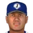
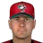
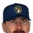

Franchise record book · MLB
Milwaukee Brewers
Seasons covered: 1969–2002. Only games played for this franchise count.
Read this first: seasons 1871–2001 are real MLB history that shipped with the OOTP file, mapped by OOTP onto this universe's 30 original franchises (club names as they were that season). 2002 is this universe, season to date (top tiers: MLB, ABL, FBL). Player names are as the export stores them; OOTP gives some historical players generated names.
Home runs
Hits
RBI
Runs
Stolen bases
Doubles
Triples
Walks
Total bases
Batting average qualified
| # | Player | Season | Team | Batting average |
|---|---|---|---|---|
| #1 | 1987 |  Milwaukee Brewers Milwaukee Brewers | .353 | |
| #2 | 1980 | Milwaukee Brewers | .352 | |
| #3 | 2002 (MLB) | Milwaukee Brewers | .333 | |
| #4 |  Dave Nilsson • | 1996 | Milwaukee Brewers | .331 |
| #5 | 1982 | Milwaukee Brewers | .331 | |
| #6 | 1991 | Milwaukee Brewers | .327 | |
| #7 | 1999 | Milwaukee Brewers | .326 | |
| #8 | 1996 | Milwaukee Brewers | .325 | |
| #9 | 1991 | Milwaukee Brewers | .325 | |
| #10 | 1979 | Milwaukee Brewers | .322 |
On-base % qualified
| # | Player | Season | Team | On-base % |
|---|---|---|---|---|
| #1 | 1987 | Milwaukee Brewers | .438 | |
| #2 | 1991 | Milwaukee Brewers | .424 | |
| #3 | 1979 | Milwaukee Brewers | .414 | |
| #4 | Dave Nilsson • | 1996 | Milwaukee Brewers | .407 |
| #5 | 1996 | Milwaukee Brewers | .406 | |
| #6 | 1998 | Milwaukee Brewers | .402 | |
| #7 | Jeromy Burnitz • | 1999 | Milwaukee Brewers | .402 |
| #8 | 1999 | Milwaukee Brewers | .401 | |
| #9 | 1991 | Milwaukee Brewers | .399 | |
| #10 | 1996 | Milwaukee Brewers | .398 |
Slugging % qualified
| # | Player | Season | Team | Slugging % |
|---|---|---|---|---|
| #1 | 2002 (MLB) | Milwaukee Brewers | .634 | |
| #2 | 2000 | Milwaukee Brewers | .588 | |
| #3 | 1982 | Milwaukee Brewers | .578 | |
| #4 | 1979 | Milwaukee Brewers | .573 | |
| #5 | 1987 | Milwaukee Brewers | .566 | |
| #6 | 1980 | Milwaukee Brewers | .562 | |
| #7 | Jeromy Burnitz • | 1999 | Milwaukee Brewers | .561 |
| #8 | Jeromy Burnitz • | 1997 | Milwaukee Brewers | .553 |
| #9 | 2001 | Milwaukee Brewers | .547 | |
| #10 | 1996 | Milwaukee Brewers | .543 |
OPS qualified
| # | Player | Season | Team | OPS |
|---|---|---|---|---|
| #1 | 2002 (MLB) | Milwaukee Brewers | 1.010 | |
| #2 | 1987 | Milwaukee Brewers | 1.003 | |
| #3 | 1979 | Milwaukee Brewers | .987 | |
| #4 | Jeromy Burnitz • | 1999 | Milwaukee Brewers | .963 |
| #5 | 1982 | Milwaukee Brewers | .957 | |
| #6 | 2000 | Milwaukee Brewers | .948 | |
| #7 | 1996 | Milwaukee Brewers | .941 | |
| #8 | Jeromy Burnitz • | 1997 | Milwaukee Brewers | .934 |
| #9 | Dave Nilsson • | 1996 | Milwaukee Brewers | .932 |
| #10 | 1980 | Milwaukee Brewers | .926 |
WAR (OOTP)
Wins
Strikeouts
| # | Player | Season | Team | Strikeouts |
|---|---|---|---|---|
| #1 | 1987 | Milwaukee Brewers | 240 | |
| #2 | 1986 | Milwaukee Brewers | 207 | |
| #3 | 1988 | Milwaukee Brewers | 192 | |
| #4 |  Cal Eldred • | 1993 | Milwaukee Brewers | 180 |
| #5 | 1989 | Milwaukee Brewers | 173 | |
| #6 | 1971 | Milwaukee Brewers | 169 | |
| #7 | 1987 | Milwaukee Brewers | 163 | |
| #8 | 1999 | Milwaukee Brewers | 161 | |
| #9 | 1970 | Milwaukee Brewers | 161 | |
| #10 | 1987 | Milwaukee Brewers | 150 |
Saves
Innings
| # | Player | Season | Team | Innings |
|---|---|---|---|---|
| #1 | 1973 | Milwaukee Brewers | 314.1 | |
| #2 | 1978 | Milwaukee Brewers | 293.1 | |
| #3 | 1976 | Milwaukee Brewers | 292.2 | |
| #4 | 1978 | Milwaukee Brewers | 280.2 | |
| #5 | 1973 | Milwaukee Brewers | 276.1 | |
| #6 | 1971 | Milwaukee Brewers | 264.2 | |
| #7 | 1992 | Milwaukee Brewers | 261.2 | |
| #8 | 1987 | Milwaukee Brewers | 261.2 | |
| #9 | 1982 | Milwaukee Brewers | 258.0 | |
| #10 | Cal Eldred • | 1993 | Milwaukee Brewers | 258.0 |
Complete games
Shutouts
ERA qualified
| # | Player | Season | Team | ERA |
|---|---|---|---|---|
| #1 | 1978 | Milwaukee Brewers | 2.36 | |
| #2 | 1988 | Milwaukee Brewers | 2.45 | |
| #3 | 1986 | Milwaukee Brewers | 2.79 | |
| #4 | 1976 | Milwaukee Brewers | 2.81 | |
| #5 | 1972 | Milwaukee Brewers | 2.83 | |
| #6 | 1991 | Milwaukee Brewers | 2.84 | |
| #7 | 1971 | Milwaukee Brewers | 2.94 | |
| #8 | 1989 | Milwaukee Brewers | 2.95 | |
| #9 | 2002 (MLB) | Milwaukee Brewers | 3.00 | |
| #10 | 1980 | Milwaukee Brewers | 3.10 |
WHIP qualified
| # | Player | Season | Team | WHIP |
|---|---|---|---|---|
| #1 | 1988 | Milwaukee Brewers | 1.00 | |
| #2 | 1978 | Milwaukee Brewers | 1.06 | |
| #3 | 1991 | Milwaukee Brewers | 1.12 | |
| #4 | 1971 | Milwaukee Brewers | 1.13 | |
| #5 | 1992 | Milwaukee Brewers | 1.15 | |
| #6 | 1989 | Milwaukee Brewers | 1.16 | |
| #7 | 1978 | Milwaukee Brewers | 1.17 | |
| #8 | 1992 | Milwaukee Brewers | 1.17 | |
| #9 | Jaime Navarro • | 1992 | Milwaukee Brewers | 1.17 |
| #10 | 1985 | Milwaukee Brewers | 1.17 |
K/9 qualified
| # | Player | Season | Team | K/9 |
|---|---|---|---|---|
| #1 | 1987 | Milwaukee Brewers | 8.3 | |
| #2 | 2002 (MLB) | Milwaukee Brewers | 8.2 | |
| #3 | 1999 | Milwaukee Brewers | 8.2 | |
| #4 | 1987 | Milwaukee Brewers | 7.9 | |
| #5 | 2002 (MLB) | Milwaukee Brewers | 7.8 | |
| #6 | 1988 | Milwaukee Brewers | 7.6 | |
| #7 | 1986 | Milwaukee Brewers | 7.5 | |
| #8 | 1987 | Milwaukee Brewers | 7.5 | |
| #9 | 2002 (MLB) | Milwaukee Brewers | 7.4 | |
| #10 | 1998 | Milwaukee Brewers | 7.3 |
WAR (OOTP)
Home runs
| # | Player | Years | Home runs |
|---|---|---|---|
| #1 | 1974–93 | 251 | |
| #2 | 1973–86 | 208 | |
| #3 | 1971–87 | 201 | |
| #4 | 1971–86 | 176 | |
| #5 | 1989–02 | 169 | |
| #6 | Jeromy Burnitz • | 1993–02 | 165 |
| #7 | 1978–98 | 160 | |
| #8 | 1984–96 | 137 | |
| #9 | 1968–83 | 134 | |
| #10 | 1966–79 | 115 |
Hits
| # | Player | Years | Hits |
|---|---|---|---|
| #1 | 1974–93 | 3142 | |
| #2 | 1978–98 | 2281 | |
| #3 | 1971–87 | 1815 | |
| #4 | 1976–92 | 1696 | |
| #5 | 1968–83 | 1168 | |
| #6 | 1971–86 | 1144 | |
| #7 | 1987–02 | 1064 | |
| #8 | 1973–87 | 1029 | |
| #9 | 1994–02 | 864 | |
| #10 | 1966–79 | 851 |
RBI
| # | Player | Years | RBI |
|---|---|---|---|
| #1 | 1974–93 | 1406 | |
| #2 | 1971–87 | 944 | |
| #3 | 1978–98 | 790 | |
| #4 | 1971–86 | 685 | |
| #5 | 1973–86 | 605 | |
| #6 | 1976–92 | 568 | |
| #7 | 1989–02 | 566 | |
| #8 | 1968–83 | 529 | |
| #9 | Jeromy Burnitz • | 1993–02 | 525 |
| #10 | 1987–02 | 524 |
Runs
| # | Player | Years | Runs |
|---|---|---|---|
| #1 | 1974–93 | 1632 | |
| #2 | 1978–98 | 1275 | |
| #3 | 1971–87 | 821 | |
| #4 | 1976–92 | 726 | |
| #5 | 1968–83 | 596 | |
| #6 | 1971–86 | 567 | |
| #7 | 1989–02 | 528 | |
| #8 | 1973–86 | 524 | |
| #9 | 1987–02 | 472 | |
| #10 | Jeromy Burnitz • | 1993–02 | 467 |
Stolen bases
| # | Player | Years | Stolen bases |
|---|---|---|---|
| #1 | 1978–98 | 412 | |
| #2 | 1974–93 | 271 | |
| #3 | 1976–92 | 137 | |
| #4 | 1962–76 | 136 | |
| #5 | 1992–97 | 112 | |
| #6 | 1988–01 | 109 | |
| #7 | 1985–94 | 108 | |
| #8 | 1987–02 | 102 | |
| #9 | 1992–02 | 78 | |
| #10 | 1971–87 | 77 |
Doubles
| # | Player | Years | Doubles |
|---|---|---|---|
| #1 | 1974–93 | 583 | |
| #2 | 1978–98 | 405 | |
| #3 | 1971–87 | 345 | |
| #4 | 1976–92 | 262 | |
| #5 | 1968–83 | 215 | |
| #6 | 1971–86 | 194 | |
| #7 | 1987–02 | 194 | |
| #8 | 1994–02 | 186 | |
| #9 | 1973–87 | 177 | |
| #10 | 1973–86 | 172 |
Triples
| # | Player | Years | Triples |
|---|---|---|---|
| #1 | 1974–93 | 126 | |
| #2 | 1978–98 | 86 | |
| #3 | 1973–87 | 42 | |
| #4 | 1976–92 | 38 | |
| #5 | 1971–87 | 33 | |
| #6 | 1993–02 | 26 | |
| #7 | 1987–02 | 24 | |
| #8 | 1974–85 | 22 | |
| #9 | 1971–86 | 21 | |
| #10 | 1988–01 | 21 |
Walks
| # | Player | Years | Walks |
|---|---|---|---|
| #1 | 1974–93 | 966 | |
| #2 | 1978–98 | 755 | |
| #3 | 1973–86 | 501 | |
| #4 | 1968–83 | 440 | |
| #5 | 1971–86 | 432 | |
| #6 | Jeromy Burnitz • | 1993–02 | 423 |
| #7 | 1989–02 | 421 | |
| #8 | 1976–92 | 383 | |
| #9 | 1971–87 | 367 | |
| #10 | 1984–96 | 333 |
Total bases
| # | Player | Years | Total bases |
|---|---|---|---|
| #1 | 1974–93 | 4730 | |
| #2 | 1978–98 | 3338 | |
| #3 | 1971–87 | 2829 | |
| #4 | 1976–92 | 2175 | |
| #5 | 1971–86 | 1908 | |
| #6 | 1968–83 | 1825 | |
| #7 | 1973–86 | 1635 | |
| #8 | 1989–02 | 1490 | |
| #9 | 1987–02 | 1477 | |
| #10 | Jeromy Burnitz • | 1993–02 | 1406 |
Batting average min 2,000 PA
| # | Player | Years | Batting average |
|---|---|---|---|
| #1 | 1994–02 | .307 | |
| #2 | 1978–98 | .303 | |
| #3 | 1971–87 | .302 | |
| #4 | 1986–97 | .300 | |
| #5 | 1995–02 | .291 | |
| #6 | 1988–01 | .290 | |
| #7 | 1993–02 | .286 | |
| #8 | 1974–93 | .285 | |
| #9 | Dave Nilsson • | 1992–99 | .284 |
| #10 | 1966–79 | .283 |
On-base % min 2,000 PA
| # | Player | Years | On-base % |
|---|---|---|---|
| #1 | 1994–02 | .384 | |
| #2 | 1986–97 | .376 | |
| #3 | 1978–98 | .367 | |
| #4 | Jeromy Burnitz • | 1993–02 | .362 |
| #5 | 1992–01 | .361 | |
| #6 | 1964–75 | .358 | |
| #7 | Dave Nilsson • | 1992–99 | .356 |
| #8 | 1995–02 | .356 | |
| #9 | 1974–85 | .354 | |
| #10 | 1988–01 | .351 |
Slugging % min 2,000 PA
| # | Player | Years | Slugging % |
|---|---|---|---|
| #1 | Jeromy Burnitz • | 1993–02 | .508 |
| #2 | 1971–87 | .470 | |
| #3 | 1992–01 | .463 | |
| #4 | 1973–86 | .461 | |
| #5 | 1971–86 | .461 | |
| #6 | Dave Nilsson • | 1992–99 | .461 |
| #7 | 1989–02 | .459 | |
| #8 | 1966–79 | .456 | |
| #9 | 1994–02 | .453 | |
| #10 | 1974–85 | .452 |
OPS min 2,000 PA
| # | Player | Years | OPS |
|---|---|---|---|
| #1 | Jeromy Burnitz • | 1993–02 | .870 |
| #2 | 1994–02 | .838 | |
| #3 | 1992–01 | .824 | |
| #4 | Dave Nilsson • | 1992–99 | .817 |
| #5 | 1978–98 | .811 | |
| #6 | 1971–87 | .809 | |
| #7 | 1971–86 | .806 | |
| #8 | 1974–85 | .805 | |
| #9 | 1964–75 | .799 | |
| #10 | 1986–97 | .798 |
WAR (OOTP)
| # | Player | Years | WAR (OOTP) |
|---|---|---|---|
| #1 | 1974–93 | 67.0 | |
| #2 | 1978–98 | 55.9 | |
| #3 | 1971–87 | 34.7 | |
| #4 | 1968–83 | 23.2 | |
| #5 | 1971–86 | 22.4 | |
| #6 | 1966–79 | 22.4 | |
| #7 | 1973–86 | 20.5 | |
| #8 | 1994–02 | 19.1 | |
| #9 | Jeromy Burnitz • | 1993–02 | 18.0 |
| #10 | 1974–85 | 17.9 |
Wins
| # | Player | Years | Wins |
|---|---|---|---|
| #1 | 1971–86 | 117 | |
| #2 | 1971–84 | 102 | |
| #3 | 1985–94 | 94 | |
| #4 | 1976–87 | 91 | |
| #5 | 1985–95 | 81 | |
| #6 | 1986–96 | 67 | |
| #7 | 1974–83 | 65 | |
| #8 | Cal Eldred • | 1991–02 | 64 |
| #9 | Jaime Navarro • | 1989–00 | 62 |
| #10 | 1969–78 | 57 |
Strikeouts
| # | Player | Years | Strikeouts |
|---|---|---|---|
| #1 | 1985–94 | 1081 | |
| #2 | 1971–86 | 929 | |
| #3 | 1976–87 | 800 | |
| #4 | 1986–96 | 749 | |
| #5 | 1985–95 | 696 | |
| #6 | Cal Eldred • | 1991–02 | 686 |
| #7 | 1971–84 | 540 | |
| #8 | Jaime Navarro • | 1989–00 | 531 |
| #9 |  Bob McClure | 1975–93 | 497 |
| #10 | 1969–78 | 495 |
Saves
| # | Player | Years | Saves |
|---|---|---|---|
| #1 | 1986–02 | 133 | |
| #2 | 1968–85 | 97 | |
| #3 | 1989–02 | 79 | |
| #4 | 1992–02 | 79 | |
| #5 | 1964–76 | 61 | |
| #6 | 1991–01 | 61 | |
| #7 | 1982–00 | 49 | |
| #8 | 1974–83 | 44 | |
| #9 | 1987–94 | 42 | |
| #10 | 1968–79 | 41 |
Innings
| # | Player | Years | Innings |
|---|---|---|---|
| #1 | 1971–86 | 2025.1 | |
| #2 | 1971–84 | 1604.2 | |
| #3 | 1976–87 | 1542.0 | |
| #4 | 1985–95 | 1482.2 | |
| #5 | 1985–94 | 1380.0 | |
| #6 | 1986–96 | 1190.0 | |
| #7 | 1969–78 | 1118.0 | |
| #8 | Cal Eldred • | 1991–02 | 1078.2 |
| #9 | 1974–83 | 1068.1 | |
| #10 | Jaime Navarro • | 1989–00 | 1061.2 |
Complete games
| # | Player | Years | Complete games |
|---|---|---|---|
| #1 | 1971–84 | 81 | |
| #2 | 1971–86 | 69 | |
| #3 | 1976–87 | 55 | |
| #4 | 1969–78 | 51 | |
| #5 | 1977–88 | 50 | |
| #6 | 1985–94 | 50 | |
| #7 | 1974–83 | 46 | |
| #8 | 1985–95 | 33 | |
| #9 | 1986–96 | 32 | |
| #10 | 1975–84 | 27 |
Shutouts
| # | Player | Years | Shutouts |
|---|---|---|---|
| #1 | 1971–86 | 19 | |
| #2 | 1971–84 | 18 | |
| #3 | 1985–94 | 12 | |
| #4 | 1974–83 | 10 | |
| #5 | 1986–96 | 8 | |
| #6 | 1976–87 | 8 | |
| #7 | 1977–88 | 7 | |
| #8 | 1969–78 | 7 | |
| #9 | 1975–84 | 6 | |
| #10 | Jaime Navarro • | 1989–00 | 6 |
ERA min 500 IP
| # | Player | Years | ERA |
|---|---|---|---|
| #1 | 1986–02 | 3.21 | |
| #2 | 1987–94 | 3.47 | |
| #3 | 1985–94 | 3.61 | |
| #4 | 1969–78 | 3.65 | |
| #5 | 1977–88 | 3.72 | |
| #6 | 1971–84 | 3.74 | |
| #7 | 1965–80 | 3.75 | |
| #8 | 1986–96 | 3.76 | |
| #9 | 1973–79 | 3.78 | |
| #10 | 1968–80 | 3.82 |
WHIP min 500 IP
| # | Player | Years | WHIP |
|---|---|---|---|
| #1 | 1986–02 | 1.23 | |
| #2 | 1968–80 | 1.23 | |
| #3 | 1985–94 | 1.24 | |
| #4 | 1986–96 | 1.24 | |
| #5 | 1969–78 | 1.27 | |
| #6 | 1977–88 | 1.28 | |
| #7 | 1971–84 | 1.28 | |
| #8 | 1985–95 | 1.29 | |
| #9 | 1976–87 | 1.30 | |
| #10 | 1987–94 | 1.31 |
K/9 min 500 IP
| # | Player | Years | K/9 |
|---|---|---|---|
| #1 | 1986–02 | 7.7 | |
| #2 | 1985–94 | 7.0 | |
| #3 | 1968–80 | 6.2 | |
| #4 | Cal Eldred • | 1991–02 | 5.7 |
| #5 | 1986–96 | 5.7 | |
| #6 | 1973–79 | 5.5 | |
| #7 | Bob McClure | 1975–93 | 5.3 |
| #8 | 1965–80 | 5.1 | |
| #9 | 1971–74 | 4.9 | |
| #10 | 1995–00 | 4.7 |
WAR (OOTP)
| # | Player | Years | WAR (OOTP) |
|---|---|---|---|
| #1 | 1985–94 | 29.7 | |
| #2 | 1976–87 | 25.9 | |
| #3 | 1986–96 | 22.1 | |
| #4 | 1971–84 | 20.7 | |
| #5 | 1971–86 | 17.2 | |
| #6 | Jaime Navarro • | 1989–00 | 15.4 |
| #7 | 1985–95 | 15.4 | |
| #8 | 1977–88 | 14.0 | |
| #9 | 1969–78 | 13.0 | |
| #10 | 1995–00 | 10.2 |
The franchise's best real-history seasons by winning percentage.
| Season | Club | W | L | PCT | Postseason |
|---|---|---|---|---|---|
| 1979 | Milwaukee Brewers | 95 | 66 | .590 | |
| 1982 | Milwaukee Brewers | 95 | 67 | .586 | Playoffs |
| 1978 | Milwaukee Brewers | 93 | 69 | .574 | |
| 1981 | Milwaukee Brewers | 62 | 47 | .569 | Playoffs |
| 1992 | Milwaukee Brewers | 92 | 70 | .568 | |
| 1987 | Milwaukee Brewers | 91 | 71 | .562 | |
| 1983 | Milwaukee Brewers | 87 | 75 | .537 | |
| 1988 | Milwaukee Brewers | 87 | 75 | .537 | |
| 1980 | Milwaukee Brewers | 86 | 76 | .531 | |
| 1991 | Milwaukee Brewers | 83 | 79 | .512 |